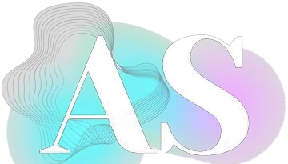

Bien reçu. On s’y met.
Nous revenons vers vous sous 24 h, puis vous recevez une première version à découvrir.
Retour au site
Nous revenons vers vous sous 24 h, puis vous recevez une première version à découvrir.
Retour au site